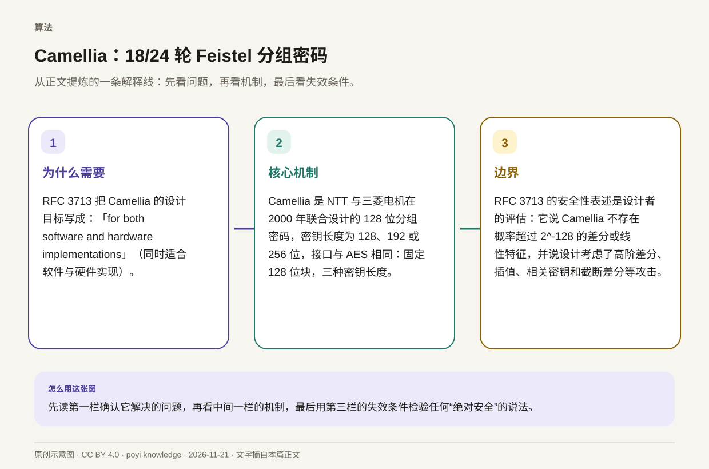
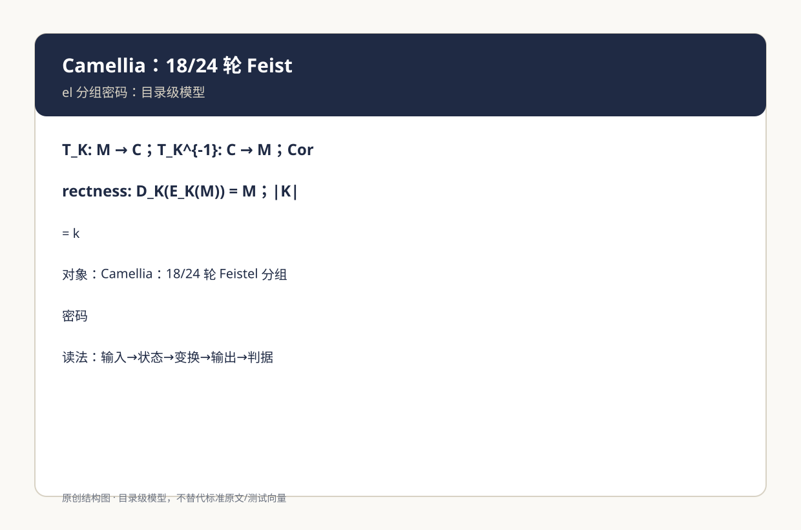

原理与机制
算法：Camellia 加密算法（Camellia）。Camellia 是 NTT 与三菱电机在 2000 年联合设计的 128 位分组密码，密钥长度为 128、192 或 256 位，接口与 AES 相同：固定 128 位块，三种密钥长度。它采用 Feistel 结构：128 位密钥运行 18 轮，192 位和 256 位密钥运行 24 轮；每 6 轮之后插入一层 FL/FL^-1，并在「before the first round and after the last round」（第一轮之前与最后一轮之后）各做一次 128 位白化。以 128 位密钥为例，数据通路是：
M = L0 || R0
L0 || R0 = M XOR (kw1 || kw2)
for r = 1..18, except r = 6, 12:
Lr = R(r-1) XOR F(L(r-1), kr)
Rr = L(r-1)
for r = 6, 12:
Lr' = R(r-1) XOR F(L(r-1), kr)
Rr' = L(r-1)
Lr = FL(Lr', ke(2r/6 - 1))
Rr = FL^-1(Rr', ke(2r/6))
C = (R18 || L18) XOR (kw3 || kw4)
192/256 位密钥把 18 轮换成 24 轮，并在第 6、12、18 轮后各插入一层 FL/FL^-1（ke1..ke6），最后得到 C = (R24 || L24) XOR (kw3 || kw4)。解密使用同一数据通路，只需把子密钥顺序倒过来：kw1 与 kw3、kw2 与 kw4、k1 与 kn、k2 与 k(n-1)，其余轮子密钥和 FL 层子密钥也按相反顺序使用。F 函数是 F(X, k) = P(S(X XOR k))。S 把 64 位输入按字节依次送入 s1、s2、s3、s4、s2、s3、s4、s1；P 对八个字节做固定线性组合：
z'1 = z1 XOR z3 XOR z4 XOR z6 XOR z7 XOR z8
z'2 = z1 XOR z2 XOR z4 XOR z5 XOR z7 XOR z8
z'3 = z1 XOR z2 XOR z3 XOR z5 XOR z6 XOR z8
z'4 = z2 XOR z3 XOR z4 XOR z5 XOR z6 XOR z7
z'5 = z1 XOR z2 XOR z6 XOR z7 XOR z8
z'6 = z2 XOR z3 XOR z5 XOR z7 XOR z8
z'7 = z3 XOR z4 XOR z5 XOR z6 XOR z8
z'8 = z1 XOR z4 XOR z5 XOR z6 XOR z7
FL 与 FL^-1 在 32 位半字上工作。设输入为 XL || XR，子密钥为 klL || klR：
FL: YR = ((XL & klL) <<< 1) XOR XR
YL = (YR | klR) XOR XL
FL^-1: XL = (YR | klR) XOR YL
XR = ((XL & klL) <<< 1) XOR YR
其中 <<< 是 32 位循环左移，&、|、XOR 分别是按位与、或、异或。FL 与 FL^-1 互为逆运算，它们把密钥相关的一位旋转和 OR 混入数据，是 Camellia 每 6 轮插入的密钥相关层。S-box 有四个：s1 是 256 字节表，s2(x)=s1(x) 循环左移 1 位，s3(x)=s1(x) 循环左移 7 位（等价于右移 1 位），s4(x)=s1(x 循环左移 1 位)，所有旋转都在 8 位内完成。官方规范还给出 s1 的代数形式 s1(x)=h(g(f(0xC5 XOR x))) XOR 0x6E，其中 f、h 是仿射映射，g 是 GF(2^8) 上的求逆（规定 1/0=0），域由 beta^8+beta^6+beta^5+beta^3+1=0 定义。规范表 4 到表 7 给出四个 S-box 的全部 256 项。密钥调度把密钥写成 KL、KR，再导出 KA、KB 和子密钥。三种密钥长度的定义不同：
- 128 位：KL=K，KR=0。- 192 位：KL 是最左 128 位；KR 是最右 64 位与它的按位补码拼接，即
KR = (K[128..191] || ~K[128..191])。- 256 位：KL 是最左 128 位，KR 是最右 128 位。KA 与 KB 用 F 函数和六个 64 位常数 Sigma1..Sigma6 导出：
D1 || D2 = KL XOR KR
D2 = D2 XOR F(D1, Sigma1)
D1 = D1 XOR F(D2, Sigma2)
D1 = D1 XOR high64(KL)
D2 = D2 XOR low64(KL)
D2 = D2 XOR F(D1, Sigma3)
D1 = D1 XOR F(D2, Sigma4)
KA = D1 || D2
D1 || D2 = KA XOR KR
D2 = D2 XOR F(D1, Sigma5)
D1 = D1 XOR F(D2, Sigma6)
KB = D1 || D2
Sigma1 = A09E667F3BCC908B
Sigma2 = B67AE8584CAA73B2
Sigma3 = C6EF372FE94F82BE
Sigma4 = 54FF53A5F1D36F1C
Sigma5 = 10E527FADE682D1D
Sigma6 = B05688C2B3E6C1FD
规范把它们定义为第 1 到第 6 个素数的「the hexadecimal representation of the square root of the」（平方根的十六进制表示）中，从小数点后第二位开始的连续 16 个十六进制位。子密钥是 KL、KR、KA、KB 的 128 位循环左移结果的左半或右半。128 位密钥生成 4 个白化子密钥 kw1..kw4、18 个轮子密钥 k1..k18、4 个 FL 层子密钥 ke1..ke4；192/256 位密钥生成 4 个 kw、24 个 k、6 个 ke。规范表 2 和表 3 列出每个子密钥的旋转量与取半规则；例如 128 位密钥的 kw1 = high64(KL<<<0)、kw2 = low64(KL<<<0)、k1 = high64(KA<<<0)、k2 = low64(KA<<<0)，k10 只取 KL<<<60 的右半，kw3/kw4 取 KA<<<111 的左右两半。192/256 位密钥的 kw3/kw4 改取 KB<<<111（128 位取 KA<<<111），而 k23/k24 与 128 位的 k17/k18 一样取 KL<<<111。192 位密钥的 KR 右半是最右 64 位的按位补码，这是规范规定的密钥构造，不是实现可以省略的步骤；若把 KR 当成普通右 128 位，24 轮子密钥会全部出错。

为什么重要
RFC 3713 把 Camellia 的设计目标写成：「for both software and hardware implementations」（同时适合软件与硬件实现），可用于 32 位处理器、8 位处理器、智能卡、密码硬件和嵌入式系统；它的密钥建立时间很短，密钥敏捷性（key agility）优于 AES。RFC 还说明 Camellia 与 AES 具有相同的 128 位「block and 128/192/256-bit」（块与 128/192/256 位）密钥接口，但它是另一种算法。Camellia 在标准化评估中获得过明确认可：NESSIE 项目把它选为推荐的密码原语，日本 CRYPTREC 把它「in the list of cryptographic techniques for」（列入密码技术清单）用于电子政务系统。ISO/IEC 18033-3:2010 又把它与 AES、SEED 一起列为 128 位分组密码，该版本在 2025 年仍被确认有效。RFC 3713 第 4 节说，设计者用「state-of-the-art cryptanalytic techniques」（当时最先进的密码分析技术）评估 Camellia，确认不存在概率超过 2^-128 的差分或线性特征，因此差分和线性攻击对完整 18 轮 Camellia 极不可能成功；它还声称设计考虑了高阶差分、插值、相关密钥和截断差分等攻击。本文把这些表述当作设计者和 RFC 的评估，而不是对全部攻击的证明。与 AES 相比，Camellia 适合 8 位和 32 位平台实现，且密钥建立时间很短；本文把 Camellia 视为与 AES 并列的另一种算法，而不是替代标准。二者不能互换使用：协议中的算法标识和测试向量不同，虽然都支持 128/192/256 位密钥。
应用与实例
CMS：RFC 3657（2004 年 1 月，Standards Track）规定 Camellia 在 CMS 中的内容加密和密钥包装用法。内容加密 OID 为 id-camellia128-cbc、id-camellia192-cbc、id-camellia256-cbc，使用 CBC 模式和 16 字节 IV，AlgorithmIdentifier 的 parameters 必须包含 IV。密钥包装 OID 为 id-camellia128-wrap、id-camellia192-wrap、id-camellia256-wrap，其 parameters 必须省略；包装算法与 RFC 3394 的 AES 密钥包装相同，只把 AES 换成 Camellia。OID 给出 KEK 的密钥长度，但不限制被包装 CEK 的长度；实现必须支持 KEK 与 CEK 等长，若支持不同长度，KEK 必须不短于 CEK。OpenPGP：RFC 5581（2009 年 6 月，Informational，Updates RFC 4880）把 Camellia 引入 OpenPGP，分配对称算法编号 11（128 位）、12（192 位）、13（256 位），并规定实现可以（MAY）实现 Camellia。RFC 9580（2024 年 7 月，Standards Track）废止了 RFC 4880、RFC 5581 和 RFC 6637，但在第 9.3 节的对称算法表中保留 11、12、13 三个 Camellia 编号；它要求实现必须实现 AES-128、应当实现 AES-256，并规定不得用 IDEA、TripleDES 或 CAST5 加密数据，同时允许实现任何其他算法。因此 Camellia 在现行 OpenPGP 中是可选算法，不是被禁止的遗留算法。TLS：RFC 5932（2010 年 6 月，Standards Track，废止 RFC 4132）定义 24 个 Camellia CBC 套件：128 位和 256 位密钥各 12 个，使用 128 位 IV。12 个 _SHA 套件使用 HMAC-SHA1，可用于 TLS 1.1 及更早版本；12 个 _SHA256 套件使用 HMAC-SHA-256，不得在 TLS 1.1 及更早版本协商，即要求 TLS 1.2 或更高。RFC 6367（2011 年 9 月，Informational）再增加 42 个 Camellia 套件，包括 CBC 和 GCM 两类，覆盖 RSA、DHE、ECDHE、PSK 等密钥交换。RFC 8996（2021 年 3 月，BCP 195）弃用 TLS 1.0 和 TLS 1.1，并在其 Updates 列表中包含 RFC 6367。RFC 6367 的 GCM 套件基于 TLS 1.2；因此这些 Camellia 套件的现行建议版本是 TLS 1.2，_SHA CBC 套件在 TLS 1.1 及更早的用法已被 BCP 195 弃用。RFC 8446（TLS 1.3）附录 B.4 只定义 5 个基于 AEAD 的套件（AES-128-GCM、AES-256-GCM、ChaCha20-Poly1305、AES-128-CCM、AES-128-CCM-8），没有 Camellia 套件；本文不声称 Camellia 可用于 TLS 1.3。测试向量：官方规范附录 B 给出三组单块向量，三组明文都是 0123456789abcdeffedcba9876543210：
128 位密钥 = 0123456789abcdeffedcba9876543210
密文 = 67673138549669730857065648eabe43
192 位密钥 = 0123456789abcdeffedcba98765432100011223344556677
密文 = b4993401b3e996f84ee5cee7d79b09b9
256 位密钥 = 0123456789abcdeffedcba987654321000112233445566778899aabbccddeeff
密文 = 9acc237dff16d76c20ef7c919e3a7509
本文的教学实现完整复现这三组向量，并验证解密返回原明文；128 位密钥走 18 轮、两层 FL，192/256 位密钥走 24 轮、三层 FL。

边界与攻击面
RFC 3713 的安全性表述是设计者的评估：它说 Camellia 不存在概率超过 2^-128 的差分或线性特征，并说设计考虑了高阶差分、插值、相关密钥和截断差分等攻击。这是 2004 年 RFC 的评估，不是对全部攻击模型的形式化证明，也不保证未来不会出现更好的分析方法。本文不把 RFC 3713 的差分/线性评估扩大成对全部攻击模型的绝对安全结论，也不引用未经本文核实的攻击论文来宣称 Camellia 已被攻破。192 位密钥的 KR 右半是右 64 位的按位补码，这是规范规定的密钥构造，不是实现可以省略的步骤；它意味着 192 位密钥的密钥材料不能按普通 256 位密钥的右 128 位来处理，实现若忽略补码步骤会得到错误子密钥。本文用 192 位官方向量验证这一细节。Camellia 在协议中的现行位置需要区分：OpenPGP 仍保留 Camellia 编号，但它是可选算法；CMS 的 Camellia OID 仍是 Standards Track 规范的一部分；TLS 的 Camellia CBC 套件分为 _SHA 与 _SHA256 两组，前者可用于 TLS 1.1 及更早，后者要求 TLS 1.2 或更高；TLS 1.0/1.1 已被 BCP 195 弃用，TLS 1.3 没有 Camellia 套件。把曾被标准化当成在最新协议中默认可用是不准确的。实现层面，本文的教学实现按字节查 S-box 表，不是常量时间实现，缓存和时序可能泄露与密钥相关的访问模式；它不生成密钥，不实现工作模式、IV 管理、填充、完整性保护或侧信道防护，不能用于保护真实数据。Camellia 只定义分组密码，协议层必须自己处理这些事项。
历史与背景
Camellia 由 NTT 与三菱电机联合开发；官方规范《Specification of Camellia -- a 128-bit Block Cipher》由 K.Aoki、T.Ichikawa、M.Kanda、M.Matsui、S.Moriai、J.Nakajima 和 T.Tokita 署名，日期为 2000 年 7 月 12 日。规范描述 128 位块、128/192/256 位密钥、18/24 轮 Feistel 结构、FL/FL^-1 层、四个 S-box、密钥调度和附录 B 测试数据。RFC 3713 由 M.Matsui、J.Nakajima 和 S.Moriai 在 2004 年 4 月发表，类别是 Informational；它把 Camellia 描述为 128 位块、128/192/256 位密钥的分组密码，并分别给出密钥调度和数据随机化两部分。RFC 3657 在 2004 年 1 月以 Standards Track 规定 CMS 用法；RFC 4132 曾为 TLS 定义 Camellia 套件，2010 年被 RFC 5932 废止并扩展；RFC 5581 在 2009 年把 Camellia 引入 OpenPGP，2024 年被 RFC 9580 废止但在新规范中保留算法编号；RFC 6367 在 2011 年增加 42 个 Camellia 套件（CBC 与 GCM）。ISO/IEC 18033-3:2010 第二版把 Camellia 列为 128 位分组密码，与 AES、SEED 并列；同一标准的 64 位分组密码部分列出 TDEA、MISTY1、CAST-128 和 HIGHT。ISO 页面显示该标准在 2025 年 9 月仍被确认有效。本文的 Camellia 实体只指这一种分组密码；AES、SEED、MISTY1、CAST-128 是其他实体，CMS、OpenPGP、TLS 是使用 Camellia 的协议，ISO/IEC 18033-3 是把它标准化的文件，不是算法本身。
逐步示例与核验
复算示例
Camellia-128 示例：密钥 0123456789abcdeffedcba9876543210，明文同值，密文 67673138549669730857065648eabe43。18 轮 Feistel，含 FL/FL^-1 变换。
参考出处
- Wikipedia search entry for Camellia 加密算法. https://zh.wikipedia.org/w/index.php?search=Camellia%20%E5%8A%A0%E5%AF%86%E7%AE%97%E6%B3%95
- Handbook of Applied Cryptography (Menezes, van Oorschot, Vanstone). https://www.cacr.math.uwaterloo.ca/hac/